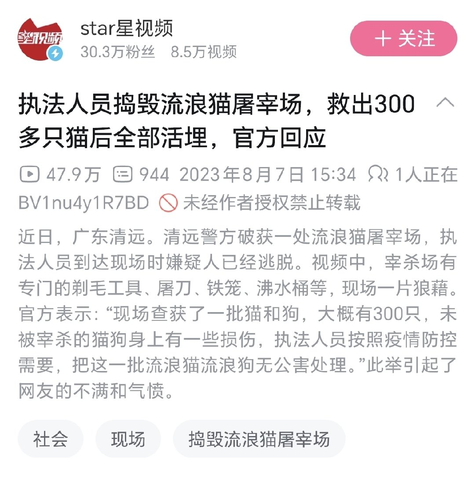

首先，活埋动物并不是「标准的无害化处理」。
农业部《病死及病害动物无害化处理技术规范》中「深埋法」的对象为动物尸体及相关动物产品，而非活体动物。
其次，活埋会造成严重痛苦，是非常残忍的杀害方式。活埋流浪猫，和流浪猫屠宰场的做法有什么区别呢？
更何况如果埋的深度不够 的话，病原体造成 的污染风险是无法完全排除的。
对于救出的这些流浪猫，文明的做法是实施安乐死或者送至领养机构。直接活埋的做法哪里文明了？反正我是不见得文明在哪。

农业部《病死及病害动物无害化处理技术规范》中「深埋法」的对象为动物尸体及相关动物产品，而非活体动物。
其次，活埋会造成严重痛苦，是非常残忍的杀害方式。活埋流浪猫，和流浪猫屠宰场的做法有什么区别呢？
更何况如果埋的深度不够 的话，病原体造成 的污染风险是无法完全排除的。
对于救出的这些流浪猫，文明的做法是实施安乐死或者送至领养机构。直接活埋的做法哪里文明了？反正我是不见得文明在哪。

经典回顾，其实这是很标准的无害化处理，然而却引来了一堆爱猫人士的无端攻击。
不虐待动物只是他们的借口，他们真正的目的是让流浪动物泛滥于人类生活空间，通过牺牲别人的利益满足自己的精神需求 https://t.co/iqmP1kthBg
不虐待动物只是他们的借口，他们真正的目的是让流浪动物泛滥于人类生活空间，通过牺牲别人的利益满足自己的精神需求 https://t.co/iqmP1kthBg